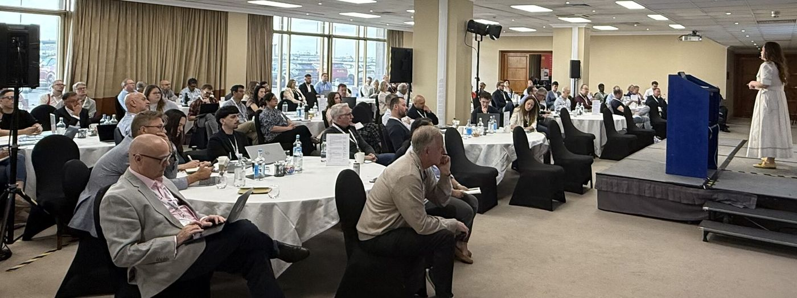
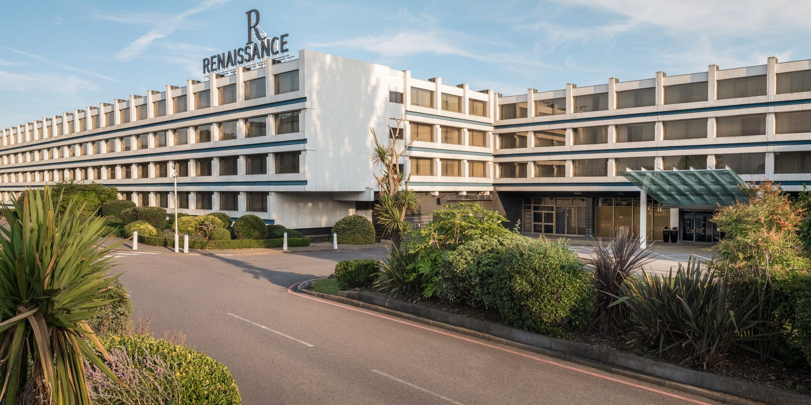

Autumn Conference 2026
Navigating an ever-changing training landscape in the age of AI. The full agenda is published, with sessions led by member companies and invited speakers.
Two conferences a year, built around sessions members lead themselves. Come ready to share, not just to listen.

Navigating an ever-changing training landscape in the age of AI. The full agenda is published, with sessions led by member companies and invited speakers.
We will publish the agenda closer to the date.
Navigating an ever-changing training landscape in the age of AI. All times are UK time. Select a session to read more.
AI is changing Training, providing new opportunities and challenges, all surrounded in a fog of hype. It’s an uncertain time. Drawing on his latest research, the AI in L&D 2026 report, Donald will clarify what’s happening (and what’s not) and ask how we think Training can change. He’ll also suggest that we must change, if we want to survive.
Education managers at all levels and topics are continuously under pressure to justify the performance of their teams and demonstrate their impact to the overall organization. How are education teams set up and performing in 2026, and what can we learn in terms of best practices, especially to drive corporate results like customer satisfaction, license sales, or renewal rates? The survey results will answer these, and for the first time include a section on AI.
This session focuses on the leadership challenge beneath all this. It is not an AI tools presentation. Instead, it explores how leaders can help education teams move from fear, role anxiety, and uncertainty toward clarity, participation, capability, and ownership.
The role of corporate learning is no longer to deliver content. It’s to enable performance. AI is helping organizations move from static courses to dynamic, personalized, conversational, and continuous learning experiences. Success won’t come from adopting AI alone; it will come from thoughtfully combining AI’s speed and scalability with human expertise, creativity, and strategic learning design. This message aligns well with today’s priorities around workforce agility, skills development, and measurable business impact.
This practical session explores how NVIDIA is rebuilding its certification program around performance-based labs, combining knowledge coverage with hands-on, scenario-based validation of practical skills by leveraging AI. The result is a faster and more scalable way to assess and certify the workforce.
Imagine if Education Services had a blank page. No legacy platforms, no inherited processes, no boundaries. What would you change if Community became part of the learning strategy, not just a place for discussion? Where is complexity costing us today, not just in money but in time, effort, and learner experience? What questions are our customers and partners asking repeatedly today? Which of those could become reusable learning? Looking at the journey from today to tomorrow, what do you think will be the biggest challenge? Let’s look at all these questions.
Every education services leader has heard some version of this question from their executives: if AI can search documentation and answer customer questions directly, why do we need a content and enablement team at all? Fina will describe how Deltek achieved the concrete reframing of the team’s value, from content producers to owners of the context AI depends on, and an impactful answer the next time someone asks why AI can’t just do our job for us.
Accelerating adoption, improving ROI, and scaling enablement while dealing with the reality of fragmented systems and rapid release cycles is almost impossible to prove achievement. This session shares how RELEX took these challenges head on, providing tangible ways to unify your training program and embed hands-on experiences.
AI is changing not only how people learn, but also how content is created and delivered, with the shift to agentic AI, with emphasis moving from product mechanics to validating outcomes. This session explores Qlik’s open-book approach to skill validation and will provide key takeaways on how to align training and assessment.
AI is reshaping the training stack, from content creation, delivery, practice environments, and assessments. Where is AI creating real value, and where is it yet to have meaningful impact? This session will provide a clear plan to evaluate your own training stack: what to hand to AI, what to protect, and where the two need to work together.
From Curriculum Developer to Orchestrator and Value Multipliers: Coordinating Content-Creating Teams to Be More Efficient and Streamlined
The entire learning ecosystem has evolved. Traditional closed systems are no longer the answer. AI-assisted flows should enable all creating teams to align and remain consistent on content standards, and feed their content into a centralized repository that serves as the single source of truth. This repository should be able to distribute the content through multiple egress channels to multiple audiences in multiple formats. The same content could be distributed through the product itself. This content will also be used as the “brain” to add context to the next content creation iterations. AI should be present throughout all of these phases, with a centralized skills engine that allows content developers to create consistent training through guided, step-by-step flows. There will be opportunities to save huge expense by using these skills to replace actual live labs with simulations.
Multi-Surface Learning: Rethinking Education Business, Content, and Platform Strategy in the Age of AI
In the age of AI, we hit a wall with our education model. Our entire experience, including our catalog, was for-fee and gated. That model served us well for years, but economic pressure, the ecosystem’s growing need for skilled talent, and the rise of conversational AI as a discovery layer forced us to rethink it. This talk covers the journey: why we pivoted our education business, platform, and content strategy; what’s working so far (with real numbers); what hasn’t worked; and where we’re headed next.
AI Learning Days from ServiceNow
Martin will describe the rationale behind ServiceNow’s recent series for all comers: “Smarter, Not Replaced: Navigating AI at Work”, “Beyond Efficiency: AI and the Future of Human Potential”, “Staying Grounded: Trust, Belonging and Finding Your Place in the AI Era”, and “You to the Power of Two: Cognitive AI, Digital Identity and Building Your Future-Ready Career”.
Each member company has two conference seats included, and every seat covers accommodation, meals, and refreshments for the whole conference. Contact us if you need more.
Meet the people who choose platforms and services for customer education teams.
Sponsorship optionsMembers meet online through the year in workshops and Special Interest Group meetings.
See the calendar
The venue
Our home for every conference, a short hop from Heathrow's terminals.
Terminals 2 and 3
Go to the Central Bus Station and take bus 105, 111, 278, or 285 to Nene Road, about seven minutes. The hotel is across the road.
Terminal 4
Take the free Piccadilly line or Elizabeth line train to Terminals 2 and 3, then follow the directions for those terminals.
Terminal 5
Take bus 423 to Nene Road, about 12 minutes. The hotel is across the road.
By taxi
Taxis are available at every terminal, and the hotel is a short drive from any of them.